Parallel Hydrostatic MM5 for Distributed Memory Computers
Updated December 27, 1996
Project for Collaboration between
Iowa State University Atmospheric Science/Computer Science
and
Argonne National Laboratory (Global Change Program) Mathematical and Computer Science Division
The Penn State/NCAR Mesoscale Meteorological Model (MM5) is designed for high-resolution simulations or forecasts of mesoscale atmospheric circulation with four-dimensional data assimilation [1]. This model has been used for real-time forecasting on small scales, process studies, sensitivity studies, and climate studies. The MM5 includes a finite difference formulation of the time-dependent Navier Stokes equations plus physics computations for the simulation of clouds, radiation, moist convection, etc. in a cubic three-dimensional region representing the atmosphere [3].
The MM5 has two versions: hydrostatic and non-hydrostatic. The hydrostatic version solves for the vertical velocity using the incompressible continuity equation rather than a prognostic equation. Another approximation used by the hydrostatic version is a calculation of pressure directly from the temperature field rather than from a Poisson equation. These two approximations allow the hydrostatic version to run faster, but with some sacrifice of the accuracy for horizontal grid spacing below 5 km. For grids with spacing larger than 20 km the two versions give almost identical results. Another distinct difference between the two versions is that the splitting method for the fast waves is explicitly implemented in the hydrostatic version. Numerical stability of the hydrostatic equations is severely limited by the speed of external gravity waves, and the fast moving gravity waves are a small fraction of the total energy. Therefore the hydrostatic version requires the split-explicit method.
The parallel MM5 maps the three-dimensional domain onto a
two-dimensional array of processors so that the computations in a column
of nodes are assigned to a single processor (See Figure 1).
This decomposition is known to provide the best efficiency [5].
The RSL is a portable library which provides two supporting mechanisms
for parallelization of finite difference climate models: communication
interface and index transformation
[6,7].
The library handles all details of the underlying message passing
such as buffer allocation, copying, routing, and asynchronous communication.
The RSL manages routines for decomposition of multiple nested domains and for
specifying the communication to exchange data both within each domain and
between domains.
For index transformation, the RSL removes iteration over global
horizontal indices from the original program and inserts the local horizontal
indices at runtime. The MM5 code contains the time loops within
which all variables are recalculated for each grid point, and the subroutine
solve1 contains both horizontal and vertical indices.
Figure 2 shows the RSL index transformation that separated the
vertical loop. Since the library keeps both of global and local horizontal
indices, the parallel program does not contain the local index transformation
from the global index. Note that there exist vertical loops because we use
the horizontal two-dimensional data mapping.
Our objective is to create a parallel model that is consistent with the
sequential model. The differences between output
values from the parallel and sequential models are defined as errors.
The approximate error is the mean of the absolute errors.
3.2 Validation of the parallel hydrostatic MM5
Validation was performed on two different grid sizes,
32x32x23 and 64x64x23, by comparing
meteorologically important field data such as east-west wind velocity and
temperature. The two different grid sizes on the same domain show how
different resolution affects on the accuracy.
The test domain is from the `Great Flood' of 1993 in the US Midwest
(9 July 1993). We used 64 processors on the IBM SP1.
Figure 5 shows the approximate errors of the east-west
wind velocity field (u) and temperature (T), and
Figure 6 shows the approximately errors of the pressure (ps)
and mixing ratio for water vapor temperature (qv) field.
It is observed that the differences
between the two models are less than measurement uncertainties in establishing
initial conditions.
Figures 7 and 8 show execution time
on a 32x32x23 grid and a 64x64x23 grid,
respectively, for a 24-hour weather simulation.
The number of processors was varied between 2x2, 4x4 and 8x8.
The execution time excludes file I/O and message displaying time.
We run the sequential model on a single processor of the IBM SP1.
Figure 7 shows that
the parallel model running on 64 processor IBM SP1 reduced the execution time
from 46 minutes to
less than 2 minutes for a 24-h simulation with 23,552 grid points
(32x32x23).
As shown in Figure 8, for a 24-h simulation with 94,208
grid points (64x64x23) the parallel
model running on 64 processor IBM SP1 reduced the execution time from 5 hours
to just 7 minutes.
The speedups shown in Figure 9 are better for larger
domains because of smaller communication overhead and better load balance
among processors.
The parallel model has inter-processor communication overhead not present
in the sequential model. We measure the communication overhead in each
time step to show the percentage of the communication overhead as a part
of the execution time. For measuring communication timings, we consider the
time-marching routine
(solve1) since it is the dominant routine for the dynamics and
physics computations in each time step. Table 1
shows the communication overhead for the two different domains.
The communication overhead is less than 10%.
The larger size domain (64x64x23) has
lower communication overhead since the communication amount
is increased by a factor of 2 over that for the smaller domain
(32x32x23) while the computation time increased
by a factor of 4.
Computations in MM5 can be classified either as dynamics or physics.
The dynamics includes computations for solving the basic Navier Stokes equations
and equations for
conservation of mass and conservation of energy. Subroutines for
parameterizing convective precipitation, radiation and boundary layer
processes are considered physics. While the dynamics computations are
uniformly distributed across processors at all time steps, the physics
computations show significant spatial and temporal variations in terms of the
computational load per grid column depending upon meteorological conditions
in that column. We analyze the overall load balance to show the
utilization of processors.
A load balance of 1.0 means all processors take exactly the same amount
of time, whereas a number close to zero indicates that many processors are
idle waiting for the busiest processor to finish.
Figure 9 compares the load balance of the parallel MM5 using two
different domain sizes. The load balance values decline as the number of
processors increases.
Load distribution maps of processors can be used to relate load imbalance
to the physics computations and thereby to the areas meteorological
conditions being simulated. Figure 10 compares the maps
with the rainfall maps obtained from the parallel model.
We use a 64x64x23 domain on 4x4 processors and 8x8
processors. The load balance percentages are averaged over 160 time steps
(3 simulation h). Precipitation is one of physics computations causing
load imbalance, so rainfall regions define processors
NASA funds (project NAG 5-2491) of the HPCC program provide partial
support for this research. Proposals were submitted to support this
and follow on collaborative work on MPMM between Iowa State University,
Ames Laboratory, and Argonne National Laboratory.
[1] R. A. Anthes, E. Y. Hsie and Y. H. Kuo,
Description of the Penn State/NCAR mesoscale model version 4 (MM4).
Tech. Report NCAR/TN-282+STR, National Center for Atmosphere Research,
Boulder, Colorado, 1987.
[2] I. Foster and B. Toonen, Load-Balancing Algorithms
for Climate Models Proc. 1994 Scalable High-Performance Computing Conf.,
IEEE, pp. 674-681, 1994.
[3] D. O. Grell, J. Dudhia and D. R. Stauffer,
A description of the Fifth-Generation Penn State/NCAR Mesoscale Model
(MM5) Tech. Report NCAR/TN-398+STR, National Center for Atmosphere
Research, Boulder, Colorado, 1994.
[4] I. B. M. Corp., IBM AIX parallel environment -
Parallel programming subroutine reference (2.0) Kingston, New York, 1994.
[5] K. Johnson, J. Bauer, G. Riccardi, K. Droegemeier
and M. Xue, Distributed Processing of a Regional Prediction Model
Mon. Wea. Rev., 122 (1994), pp. 2558-2572.
[6] J. Michalakes, RSL: A parallel runtime system
library for regular grid finite difference models using multiple nests
Tech. Report ANL/MCS-TM-197, MCS Division, Argonne National Laboratory,
Argonne, Illinois, 1994.
2 Parallel Implementation of MM5
2.1 Data Mapping
Figure 1: Data mapping of parallel MM5
2.2 RSL (Runtime System and Library)
Figure 2: RSL index transform
2.3 Parallelization steps
Figure 3: Description of communication points for solve1
Figure 4: Schematic representation of parallelization steps
3 Validation
3.1 Absolute error
Figure 5: The approximate errors of the east-west wind speed and temperature
Figure 6: The approximate errors of the pressure and mixing ratio for
water vapor
4 Performance Analysis
4.1 Execution time
Figure 7: Execution time for the 32x32x23 domain
Figure 8: Execution time for the 64x64x23 domain
Figure 8: Speedups on different number of processors
4.2 Communication overhead
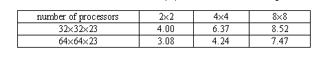
4.3 Analysis of load balance
Load balance=Tmean/Tmax
Tmean : Execution time at a processor averaged over all processors
Tmax : Maximum execution time at a processor
Figure 9: Overall load balance of the parallel MM5 on two difference domains
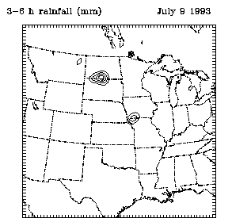
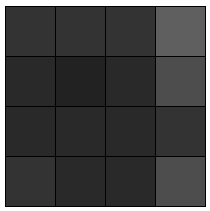
<4x4 processors>
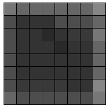
<8x8 processors>
<9-12 hour average>
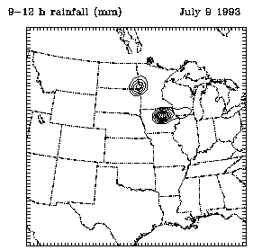
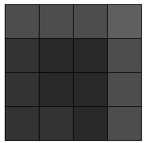
<4x4 processors>
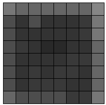
<8x8 processors>
<15-18 hour average>
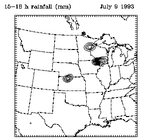
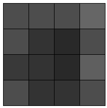
<4x4 processors>
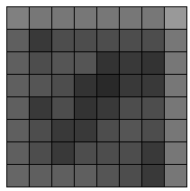
<8x8 processors>
<21-24 hour average>
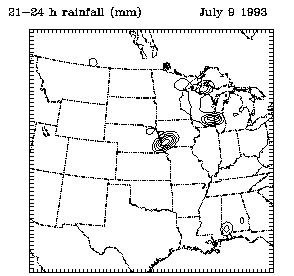
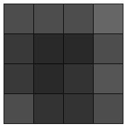
<4x4 processors>
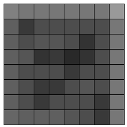
<8x8 processors>
Figure 10: Load-distribution maps for the 64x64x23 domain
Acknowledgments
References